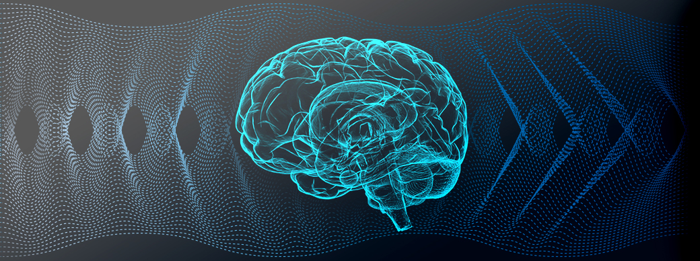

Electroencephalogram (EEG)
Residing inside the skull are billions of neurons that make up the brain. As ionic currents rush through groups of these neurons, the generated electrical potential can be acquired from the surface of the scalp. There are various montages in which the electrodes can be placed around the head for signal acquisition. The number of electrodes and exact montage vary depending on the desired functionality.
The obtained EEG signal can be analyzed in a variety of ways to obtain actionable information. This includes analysis in both the time and frequency domain. The specific analysis includes event-related potential, spectral, and connectivity analysis. Through techniques like these, BrainTrain provides insight into underlying neuro function and state. Also, unique to BrainTrain, the device utilizes this information to optimize patient treatment using non-invasive technologies, such as tACS.
References
Huang, Yu et al. “Measurements and models of electric fields in the in vivo human brain during transcranial electric stimulation.” eLife vol. 6 e18834. 7 Feb. 2017, doi:10.7554/eLife.18834
Usakli, Ali Bulent. “Improvement of EEG Signal Acquisition: An Electrical Aspect for State of the Art of Front End.” Computational Intelligence and Neuroscience, vol. 2010, 2010, pp. 1–7., doi:10.1155/2010/630649.